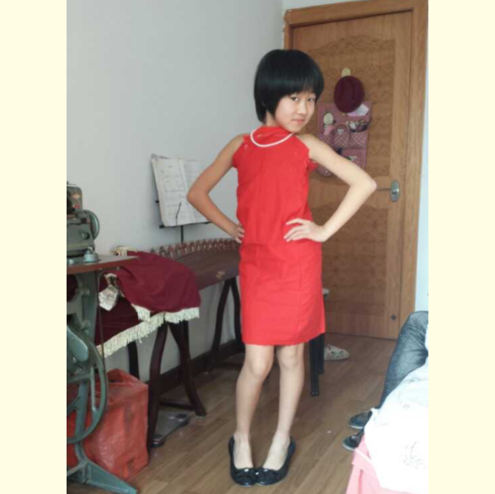

小时候的自己傻傻的，胖乎乎的，这是在幼儿园的植物园里拍的毕业纪念照，毕业那天大大的哭了

这是小学时期的一张居家照，图中的我正穿着自己做的衣服拍照，那时候非常喜欢给自己做衣服

好的，这张来到了我的“假小子”时期，那时为了“好好学习”剪了短发，还买了几件中性风的衣服
高中生啦！这时还是每天开开心心的，不怎么努力，但度过了超级难忘的的三年高中生活
高考结束了，很不舍，在操场又穿上了校服和高中的好朋友拍了纪念照，好怀念......

新的阶段！考上了心仪的大学，交到了一大堆新朋友，被大家喜欢是很幸福的事！未完待续...